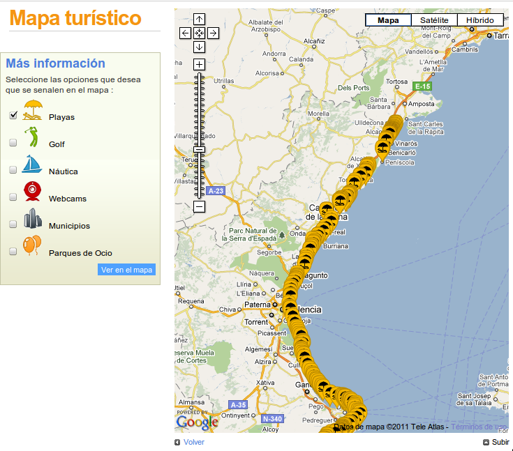

Solución de alto rendimiento para el geoportal de turismo de la Comunidad Valenciana
comunitatvalenciana.com/geoportal
VI Jornadas de SIG Libre · Girona · Marzo 2012
Jorge Sanz · jsanz@prodevelop.es · @xurxosanz · Prodevelop
Agenda
- Objetivos del proyecto
- Funcionalidades desarrolladas
- Arquitectura del geoportal
- Clientes
- Servidor
- Migración de datos
- Generación de recursos estáticos
- Servidor de búsquedas
- Conclusiones
Objetivos
Mejorar el acabado estético


Mejorar el rendimiento

Dispositivos móviles

Independencia del CMS
Funcionalidades


Arquitectura


Clientes
En el cliente web:
- Google Maps API v3
- jQuery y jQuery UI
- APIs de redes sociales, bit.ly, Google Chart,...
- Yahoo! Query Language
En las aplicaciones móviles
- Google Maps
- HTML
Migración
- Ejecución diaria
- Mediante Kettle Kitchen (Pentaho suite)
- Se actualiza una tabla por capa
- Integración en una única vista

Pregeneración de recursos
- Inmediatamente después de la migración
- Desarrollo J2SE (JTS, JDBC, Velocity)
- Generación de archivos de capa: OV2/KML
- Generación de tiles vectoriales: JSON/KML
- Gran número de ficheros
- Superando el número de inodos
- Varias particiones

Servidor de búsquedas
- Desarrollo JEE
- Indexación después de la migración
- Uso intensivo de Lucene
- Un índice por idioma (en memoria)
- Lucene Spatial para búsquedas punto/radio

- Más casos de uso de los planificados
- API de Layar y otra específica
- Se generan JSON, KML y Atom
- Implementa OpenSearch (geo)


Conclusiones
- Solución completa para el sector, basada en su mayor parte en FLOSS
- Google Maps podría sustituirse por otras tecnologías sin demasiado esfuerzo
- El acceso a redes sociales se ha migrado a Open Layers y liberado: olsocial
- ¿Y los estándares OGC?

Licencia

¡¡Gracias!!
¿Preguntas?